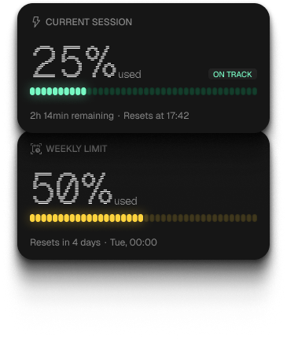
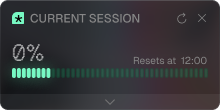
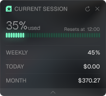
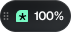

01 · Read
Read the signal.
Session pressure, weekly runway, reset time, pace, and peak hours stay legible in one quiet window.

Track your Claude Code session, weekly quota, and reset time without leaving your flow.
Read the signal, respond at the right moment, and keep Claude Code usage within reach.
01 · Read
Session pressure, weekly runway, reset time, pace, and peak hours stay legible in one quiet window.

02 · Respond
Choose banners, Windows notifications, and sounds for the thresholds that matter to you.
Each notification and sound can be configured independently.
03 · Glance
The tray icon carries session and weekly pressure at once. Pin a classic widget, expand its details, or keep only the pill.



04 · Account
Daily and monthly estimates come from Claude Code usage and pricing files on your machine.
05 · Adapt
Choose the refresh rhythm, startup behavior, display mode, and language that match how you work.
06 · Trust
Siphon reads known Claude Code paths and connects directly to Anthropic. There is no Siphon account or analytics service in between.
Read the privacy policyNo profile, telemetry, or third-party analytics.
Token and cost estimates are computed from your local Claude Code usage files.
Windows DPAPI encrypts stored credentials when available.
Quota requests go to Anthropic, never through a Siphon server.
The standard installer needs no admin elevation. Portable and winget options are available too.
Run the per-user installer or choose the portable build.
Sign in once for live quota alongside local usage.
Leave Siphon in the tray and let reset alerts come to you.